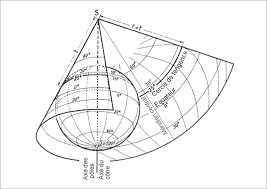
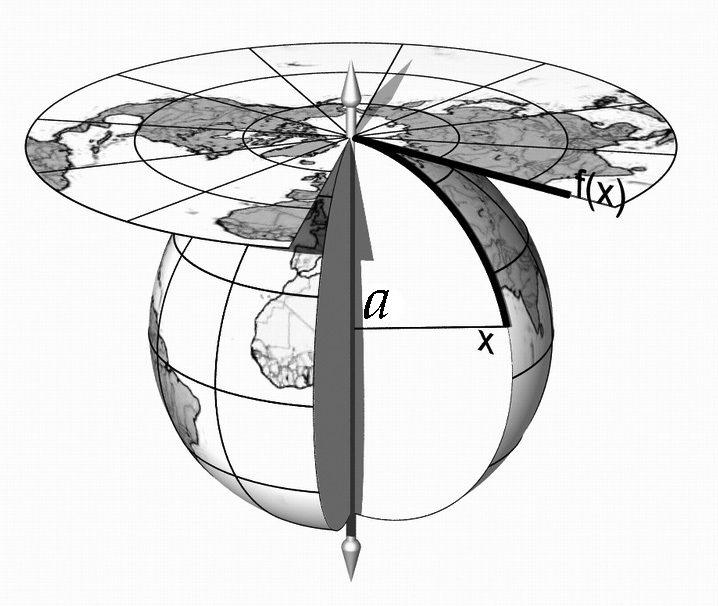

L'impérialisme par la cartographie ...(avec les cartes !) | Pablita Faust, 19 juillet 2012, MEDIAPART
"J’ai aujourd’hui 27 ans. J’ai suivi l’enseignement public classique : primaire, collège, lycée. Et il y a quelques jours, je viens de me rendre compte que l’on m’a imposé une vision erronée de la géographie de notre planète, sans jamais que l’on m’informe sur la réalité des dimensions du monde. Jamais un professeur de géographie ne m’a mise en garde sur le trucage des cartes du monde que l’on nous présente habituellement.
(...) Bigre mais pourquoi donc nous donne-t-on à étudier une carte fausse ? Pour que nous soyons conscients de la grandeur de l’Europe et du monde occidental. Pour qu’inconsciemment les pays dominés acceptent leur domination(...)
(...) La science cartographique doit prendre en compte notamment: la superficie, les formes et la direction. La projection de Fuller apparue en 1946 semble être celle qui soit le plus neutre possible en écartant les ambigüités politiques et impérialistes.(...)"
Pablita Faust a raison: les cartes sont des représentations du monde, et la façon dont il est représenté dans nos manuels scolaires traduit des rapports de pouvoirs. Mais il n'existe pas de projection qui soit vraie ou fausse. Les projections sont calculées à partir de formules mathématiques qui transforme un ellipsoïde en plan : la surface du gobe en est forcément déformée. La pertinence du choix de projection dépend de l'objectif de la carte.
On les distinguent en trois types : certaines permettent de conserver les surfaces terrestres (projections équivalentes), d'autres conservent localement les angles (projections conformes), d'autres encore les distances (projections aphylactiques).
On distingue également trois méthodes : cylindrique, conique et azimutale.
Quelques exemples ci-contre (l'animation se déclenche au premier survol de l'image et au clic sur les boutons) :
La projection de Bonne
Il s'agit d'une projection équivalente dont la méthode est pseudo-conique.
La longueur du méridien central et de tous les parallèles sont respectés. En outre, le rayon de courbure d'un « parallèle origine » est respecté. Elle est donc équivalente, mais non conforme, sauf au voisinage de son point d'origine.
Elle fut utilisée au 19ème siècle et au début du 20ème siècle pour des cartes d'atlas de l'Asie, de l'Australie, de l'Europe et de l'Amérique du Nord.

Source : ESRI
La projection azimutale équidistante
La méthode azimutale permet de projeter une surface plane à partir d'un point quelconque du globe. La projection est dite équidistante car elle possède une échelle radiale constante (les distances augmentent linéairement du centre de projection).
Contrairement à d'autres projections azimutale, elle a également l'avantage de représenter l'ensemble de la Terre en une seule carte.

Source : ESRI
La projection azimutale stéréographique
Il s'agit d'une transformation conforme, qui conserve donc les angles. La projection pocède une autre propriété importante : tout cercle sur la sphère, hormis ceux passant par le pôle sud, est transformé en un autre cercle dans le plan équatorial.
Les méridiens et les parallèles sont tous représentés comme des arcs circulaires ou des lignes droites. Les intersections de graticule sont à 90°.
Source : ESRI